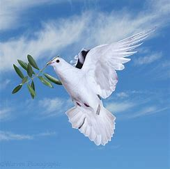

This project may not have been possible without the insight and guildiance of Prof Adrian Wisnicki of University of Nebraska, Lincoln.
NB:all the information on my colleaques were gathered from University of Nebraska, Lincoln.
Adrian S. Wisnicki is a Faculty Fellow of the Center for Digital Research in the Humanities and the Digital Humanities Program Coordinator in the College of Arts and Sciences at the University of Nebraska–Lincoln.
Bahamian native, Lyette Erin, is an English Literature M.A. student specializing in Literary and Cultural Studies. She graduated with a B.A. in English Literature and Publishing with a minor in Small Business Management from Hastings College. Her research interests include book design, fat studies, print culture, and digital humanities. At UNL, she works as a research assistant in the Willa Cather Archive.

Jun is a PhD History major and an aspiring D.H scholar

Trey is a senior in computer science, soft spoken, humble and a complete gentleman. Thanks a lot Hester.
Jeff Hill is an English M. A. student studying creative writing at the University of Nebraska-Lincoln, where he previously obtained a B. S. in education and a certificate in teaching of writing. He is a former high school writing teacher and current faculty member of the Writer's Hotel writing conference in New York City. As a graduate research assistant for the Archive, Jeff is working as a research assistant on the NEH-funded grant investigating Whitman's mid-career journalism
.
Andrew Johnson
Tina Lee
Arka Maitra
A graduate of both undergraduate and graduate programs from Presidency University, Kolkata, with majors in English Literature, Arka Maitra is primarily interested in Literary and Cultural studies pertaining to early Colonial and Anglophone literature and Postcolonial theory.
Thara Michaelis
Thara is a senior in English and Spanish, calm, and always ready to help. Thank you Thara.
Makena Nail
Makena is a second year Ph.D. student, and a graduate from East Tennessee State University in May of 2021 with a Masters in Sociology. During masters’ she gained experience in survey research methods and qualitative interviews. In the summer of 2021, She was an intern at IPSOS working with their Knowledge Panel building surveys and working on polling forensics for the 2020 Presidential election. Now in her first year at UNL she is working on her quantitative methods and adjusting to life in Lincoln. One thing I admire about Makena, she was always drinking water and I guess that I needed to improve my water drinking skills too. Thank you Makena.
Gregory Payne
Allyssa Perrotto
Angela Thornberg